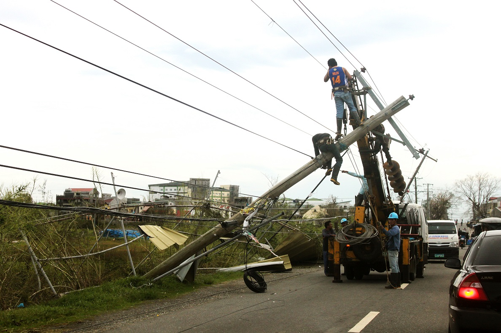

In eastern Mindanao, the conflict between the Armed Forces of the Philippines (AFP) and the New People’s Army (NPA) — the military arm of the Community Party of the Philippines — has subsided since the announcement of an agreed ceasefire in August 2016. This has allowed the return of 830 displaced persons affected by conflict in the municipality of Malimono, Surigao del Norte province. About 3,000 IPs displaced for a year in Tandag City, Surigao del Sur province, have also returned to their homes in the municipality of LIanga after an agreement was reached to pull out military from the area. The Manobo, Mamanua and Teduray are indigenous tribes that live in the provinces of Maguidanao, Bukidnon, Agusan, Surigao del Norte, Davao del Norte and Surigao del Sur. These areas are frequently subject to conflict, particularly among NPA and AFP, causing them to fear the shrinking of their ancestral domain and cultural identity. Over the years, they have migrated into forested hinterlands and mountainous areas far from urban and fast developing centres, where they lack access to basic social services, schools, health and other socioeconomic development. While the ceasefire has given them hope and enabled them to peacefully return to their homes, protection of these communities and their cultural ways of life remains important.
Credit: OCHA/S. Taulani Tandag City, Surigao del Sur (2015) - Indigenous children continue their schooling in an evacuation centre.
Datu Ginam Andel is one of the leaders of about 700 Manobos from the municipality of Talaingod in Bukidnon province. They have encamped in Haran Mission House of United Church of Christ in the Philippines in Davao City for more than a year. He is still worried about the safety and security of his community. While a majority of internally displaced persons (IDPs) have returned to places near their homes, a paramilitary group called Alamara have prevented them from returning home, according to Datu Ginam. The AFP pulled out its troops in September, a pre-requisite demanded by the tribe, but he says the paramilitary group is demanding payment before they allow the rest of the IPs to return. “We hope to return peacefully in December as we count on the peace agreement, as well as the pull out and disarmament of the paramilitary groups.” He says the mountainous areas where the tribes live have attracted large mining and logging companies that have made life difficult since 1994. Frequent skirmishes have also been reported between NPA and the private militia of these companies causing repeated displacement.
The Haran camp in Davao City continues to host about 200 families from the Kapalong IP community who fear returning to their homes. Various local government agencies, civil society organizations, faith-based groups and other private organizations are providing immediate food assistance, and the children go to local schools near the camp. The camp leaders have agreed to be accompanied by government agency representatives, including the Philippine National Police, Department of Social Welfare and Development and Department of Interior and Local Government, when they return home in December.
Rijal Ibrahim Rasul was forced to drop out of school to sell fish with his father. His family lost their livelihood after the 2013 Zamboanga conflict. The eldest among three children, Rijal hopes to find a better job to support his family.
“It was hard to find a decent job. I lost my confidence after applying for several jobs. I felt I was also discriminated against as a Muslim. I was forced to accept whatever work was available or to borrow money for my family to survive,” said the 23-year old Rijal from Sta. Catalina.
The mere thought of gunshots and the trauma experienced during the conflict still makes Jewelyn Baguio cry. The 20-year old also lost her source of income and relied on government assistance.
The International Labour Organization (ILO) has been involved in helping families displaced by the conflict since 2013. With funding from the United Nations Peacebuilding Support Office (PBSO), ILO has focused on creating sustainable livelihood opportunities together with the Food and Agriculture Organization and has worked with the government, employers and workers organizations. Under a public-private partnership, ILO engaged industry partners such as the Garden Orchid Hotel Zamboanga for skills training.
“The conflict affected the whole city. People suffered and homes were burned to the ground. The impact on families and their livelihood was beyond imaginable. Zamboanga is our home and we have to help,” said Bryan Tan Go, Manager of the Garden Orchid Hotel Zamboanga .
In partnership with the ILO, the hotel developed a food and beverage skills training programme to equip young people like Rijal and Jewelyn with knowledge and skills, as well as to help them develop a positive mindset and boost their confidence.
Forty-four participants completed the skills training. Vulnerable people like women, youth and indigenous peoples were given priority. The partnership was also an opportunity to match skills with available employment.
“It is vital to match skills training with the demands of employers. Bringing together partners is vital towards rebuilding after the conflict. Beyond encouraging employers to invest in skills and helping young people find decent work, this partnership is an opportunity to support peacebuilding efforts and to work together to find durable solutions,” said Khalid Hassan, Director of the ILO Country Office for the Philippines.
Rijal’s employment at the cafe of the hotel helps him gain confidence and support his family. Jewelyn said that the income she earns from the hotel allows her to provide for the needs of her baby while her husband finds employment. The training also allowed her to overcome the trauma and to help her community rise from the conflict.
"Bringing together partners is vital towards rebuilding after the conflict. Beyond encouraging employers to invest in skills and helping young people find decent work, this partnership is an opportunity to support peacebuilding efforts and to work together to find durable solutions" - Khalid Hassan, Director ILO Philippines
Almost two months have passed since Typhoon Haima (locally named Lawin) made landfall in Peñablanca, Cagayan province on 19 October as a Category 4 typhoon. Though it passed swiftly over northern Luzon, it left behind a broad path of destruction to homes, businesses and infrastructure. In its wake, at least 23 people died and over 260,000 people were moved to evacuation centres.
“The situation is getting back to normal,” says Mr. Merlijn van Weerd, who operates a nongovernmental organization (NGO) in the town of Cabagan in Isabela province, which was along the typhoon’s path. “There are still many areas without power, especially away from the main highway. There is widespread damage to houses, and to buildings such as schools, but people are rebuilding. Few houses have been completely destroyed, but nearly all houses have some form of damage.”
Over 270,000 homes were damaged or destroyed, according to the final report from the Department of Social Welfare and Development (DSWD). About half of the total damages were in Cagayan alone, and another 23 per cent of the total damages occurred in neighbouring Isabela province. Several provinces in the Cordilleras Administrative Region (CAR) and the province of Ilocos Sur in Region I were also hit hard. The Inter-Agency Standing Committee’s (IASC) Shelter Cluster predicts as many as 400,000 homes across the region have been damaged or destroyed.
More than 40,000 farmers were affected by the typhoon, and nearly 200,000 hectares of farmland in northern Luzon were damaged, according to a joint assessment (PDF) conducted by the Philippines’ Department of Agriculture (DA) and the Food and Agriculture Organization (FAO) of the United Nations. About 37 per cent of the affected farmland, mostly located in Cagayan and Isabela provinces, has no chance of recovery. Farmers of rice, corn and high value crops, including mung beans, tobacco, coffee, bananas and mangoes, were especially hurt.
Just three days prior, on 16 October, northern and central Luzon were also struck by Typhoon Sarika, a Category 3 storm when it made landfall. Regions II and III suffered the most impact, affecting another 100,000 farmers and more than 170,000 hectares of farmlands. The cumulative impact to food security in the area is devastating. Many farmers will face difficult times ahead without anything to harvest, or fields to plant because they have been irreparably damaged by the floods and debris.
“Many farmers have lost their crops,” observed Mr. van Weerd, “and fields along rivers have been destroyed by floods and by the deposit of debris. Some farmers are harvesting and selling the deposited wood on their land, especially along rivers near the Sierra Madre forest, where logging remnants have washed down.”
Crops were not the only losses to the area. Fish, poultry and livestock losses, as well as damages to agricultural and aquacultural facilities, amounted to PhP400 million (US$8 million). Overall production losses to the region have reached P11.3 billion ($236 million).
In Region II and CAR, where the impact from Typhoon Haima was greatest, damages to infrastructure, including roads and bridges, government buildings, health facilities, public schools, and electric cooperatives amount to P7.9 billion ($165 million).
In spite of the widespread impact, the restoration of lifelines is coming along. Both CAR and Region II report that cellular services have been fully restored. Most roads and bridges have been made passable again. Restoration of power lines, on the other hand, is taking longer to complete. While power has been completely restored to the northern half of Cagayan and over 90 per cent of Tuguegarao City, by mid-November the southern half of Cagayan was still mostly without power.
In Isabela, the northern municipalities are at about 50 per cent electrification, while power to the rest of the province has been fully restored. In CAR, about 60 per cent of the provinces of Abra and Kalinga are still without power. In most cases, public schools were used as evacuation centres. While all schools have been reverted and classes resumed in most of northern Luzon by late October, Region II reports that classes in all grade levels remain suspended in Isabela and Cagayan, except for Tuguegarao City.
Government programs to help families recover are moving slowly. By the end of November, DSWD’s emergency shelter cash assistance had reached about 30,000 households, or about 11 per cent of the households it has targeted to receive the assistance. Distribution has been completed in Region III and was at 58 per cent in Region I, while just 6 per cent of the nearly 200,000 targeted households in Region II and 24 per cent of CAR households have received the benefit. In a 2 December press release, DSWD’s Disaster Response Assistance and Management Bureau Director Felino Castro said that DSWD recognizes the need to hasten the release of funds to the disaster survivors. Those with partially damaged homes will be given a total of P10,000 ($208), while those whose homes were destroyed will be given a total of P30,000 ($625).
In light of the severity of the damages to agriculture, DA has formally requested FAO for assistance in delivering agriculture and fishery programmes and services to support the relief and rehabilitation of affected farming families in Nueva Ecija and Aurora provinces. FAO says it is internal resources to respond to this request.
The City of Tuguegarao has also requested UN assistance to help rehabilitate government offices and provide livelihood projects to its residents.

Meanwhile, local and international NGOs continue to participate in relief and early recovery efforts. The Philippine Red Cross (PRC) and Care Philippines are leading the support of early recovery shelter assistance. In the hardest-hit provinces in Region II and CAR, PRC has reached about half of the 10,000 households it targeted for assistance with blankets, mats, mosquito nets, water containers, hygiene kits and tarpaulins. It intends to support early recovery in the same areas with its shelter repair assistance and build-back-safer technical support for a small number of households, subject to funding availability. Care Philippines plans to support 1,400 to 1,500 households in Cagayan and Kallinga with more durable construction materials through a conditional cash transfer of P5,000 ($104) per household, accompanied by technical assistance and build-back-safer awareness training.
A number of Water, Sanitation and Hygiene Cluster partners continue to provide emergency and early recovery support to vulnerable groups severely affected by the typhoon. PRC continues to promote hygiene in Cagayan, Isabela, Kalinga, Apayao, Abra and Mt. Province. Action Against Hunger and Relief International, through the support of UNICEF, are currently providing water and sanitation repair tool kits, initiating water testing and treatment, and launching health and hygiene campaigns to about 1,500 households in selected municipalities in Kalinga and Cagayan.
Oxfam, Action Against Hunger and Plan International, in partnership with local NGOs, are planning cash programme activities, including unconditional and conditional cash grants and cash-for-work programmes, to address immediate humanitarian needs, as well as food security and livelihood gaps. The programmes are expected to last about four months and will target beneficiaries in some of the hardest hit municipalities in Cagayan, Kalinga, Isabela and Apayao.
Overall, recovery is taking off at different paces depending on a number of factors, including severity of damages, accessibility to resources and even community organization. “In some barangays clean up and repair operations are well arranged,” Mr. van Weerd notes, “and people have been receiving food packages and even building materials. Other barangays have no centrally organized activities at all, and people have to take care of themselves.”
One challenge in assessing the aftermath of a destructive storm is capturing the impact to vulnerable and marginalized populations. The Agta, indigenous people who live in the affected area, have received little attention in the wake of Typhoon Haima. While a national media outlet profiled groups of Agta that live in the Sierra Madre mountains who came down to seek assistance, there is little other information from Government agencies or NGOs on impacts to indigenous groups or other vulnerable and marginalized people. Mr. Gener Cabaldo, an Agta from the town of Maconacon in Isabela who works for the National Commission on Indigenous People, said there is no government or NGO support reaching affected people in the coastal area of Isabela.
The biggest challenge to local and international NGOs remains funding. While resources that are already located in the country are being used in the response and transition to early recovery, those inventories need to be replenished. The Shelter Cluster has been undertaking substantial lobbying of donors, but with no effect, to fill what it sees as “the significant gap in assistance currently seen and projected for recovery shelter” if further funds are not released by the Government.
“I think the most pressing needs now are to reach remote villages, including IPs, in the western and eastern Sierra Madre to assess whether there are any food shortages or medical issues,” says Mr. van Weerd. “The economic impact, including the absence of power for several weeks and possibly months, on Isabela and Cagayan is significant."
The cumulative impact to food security in the area is devastating. Many farmers will face difficult times ahead without anything to harvest, or fields to plant because they have been irreparably damaged by the floods and debris.
One challenge in assessing the aftermath of a destructive storm is capturing the impact to vulnerable and marginalized populations. The Agta, indigenous people who live in the affected area, have received little attention in the wake of Typhoon Haima.
In light of the severity of the damages to agriculture, DA has formally requested FAO for assistance in delivering agriculture and fishery programs and services to support the relief and rehabilitation of affected farming families in Nueva Ecija and Aurora provinces.